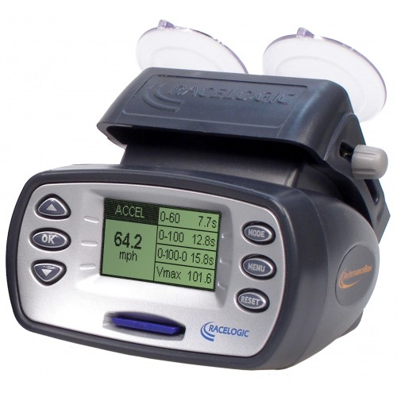

Benchmarked
Accuracy & Precision
Polo Analytics has been benchmarked against the industry-standard
Racelogic PerformanceBox 10 Hz

A professional 10 Hz GPS performance meter widely used in motorsports
for precise measurement of speed, distance, and acceleration.
— a professional GPS device widely used in motorsports
for precise speed and distance measurements.
Average Difference (km/h)
Mean Absolute Deviation (km/h)
With Polo Analytics, you benefit from professional-grade precision directly on your smartphone —
no need for bulky or expensive hardware.
By leveraging modern multi-band GNSS technology in today’s smartphones, Polo Analytics delivers
real-time, reliable insights that empower polo players and trainers to ride smarter and safer.